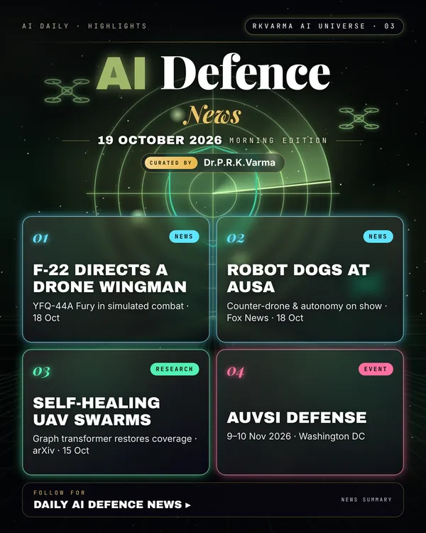

Latest updates · 19 October 2026
In the full issue →Autonomy dominated the defence week. Robot dogs and counter-drone systems filled the AUSA show floor, an F-22 pilot directed a drone wingman, and Pentagon AI funding awaits Congress.
Research, industry & policy
- Robot dog and counter-drone systems at AUSA, Fox News · 18 Oct 2026: Drones, counter-drone weapons and a robot dog led the show floor as the US Army races to field autonomous systems and apply lessons from Ukraine.
- F-22 pilot commands a YFQ-44A drone wingman, Tom's Hardware · 18 Oct 2026: In an airborne tactical-control demonstration, an F-22 pilot directed Anduril's YFQ-44A Fury collaborative combat aircraft in simulated combat.
- Pentagon AI and autonomy push in limbo, Washington Examiner · 18 Oct 2026: The 'generational' AI and autonomy investment depends on Congress passing a reconciliation package.
Journals & preprints
- Self-healing UAV swarm networks, arXiv 2610.22085 · 15 Oct 2026: A graph transformer infers damage and restores coverage in partitioned 3D drone-swarm networks operating in adversarial environments.
Conferences, workshops & events
- AUVSI Defense, 9–10 Nov 2026 · Washington DC: Uncrewed systems and autonomy for defence.
- ASD Uncrewed Systems, 2–3 Dec 2026 · London: Military uncrewed and autonomous systems.
Why it matters
Human-machine teaming is moving from demonstrations to procurement, and that raises the stakes for funding, testing and rules on human control.

